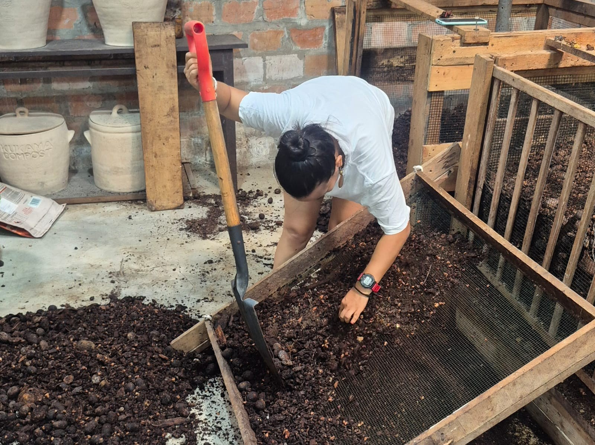

Separamos
Identificamos los residuos orgánicos que pueden convertirse en compost.
Ciclo de vida
Transformamos residuos orgánicos en vida para el suelo, los huertos y nuestras comunidades.
Quiero compostar →
¿Por qué hacerlo?
El compostaje aprovecha cáscaras, restos de comida y materiales vegetales para crear un abono natural. Es una práctica sencilla que reduce residuos, mejora la salud del suelo y nos enseña a mirar los ciclos de la naturaleza.
Identificamos los residuos orgánicos que pueden convertirse en compost.
Combinamos materiales secos y húmedos, cuidando aire, humedad y tiempo.
Usamos el compost maduro para nutrir plantas, huertos y jardines.
Empecemos juntos
Podemos acompañar a tu institución, barrio o comunidad.